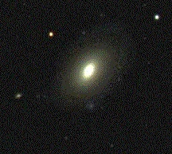
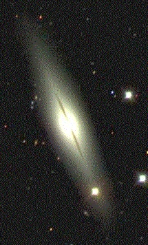

ORIGEN DEL UNIVERSO
La teoría más conocida sobre el origen del universo se centra en un cataclismo cósmico sin igual en la historia: el big bang. Esta teoría surgió de la observación del alejamiento a gran velocidad de otras galaxias respecto a la nuestra en todas direcciones, como si hubieran sido repelidas por una antigua fuerza explosiva. Antes del big bang, según los científicos, la inmensidad del universo observable, incluida toda su materia y radiación, estaba comprimida en una masa densa y caliente a tan solo unos pocos milímetros de distancia. Este estado casi incomprensible se especula que existió tan sólo una fracción del primer segundo de tiempo. Los defensores del big bang sugieren que hace unos 10.000 o 20.000 millones de años, una onda expansiva masiva permitió que toda la energía y materia conocidas del universo (incluso el espacio y el tiempo) surgieran a partir de algún tipo de energía desconocido. La teoría mantiene que, en un instante (una trillonésima parte de un segundo) tras el big bang, el universo se expandió con una velocidad incomprensible desde su origen del tamaño de un guijarro a un alcance astronómico. La expansión aparentemente ha continuado, pero mucho más despacio, durante los siguientes miles de millones de años. Los científicos no pueden saber con exactitud el modo en que el universo evolucionó tras el big bang. Muchos creen que, a medida que transcurría el tiempo y la materia se enfriaba, comenzaron a formarse tipos de átomos más diversos, y que estos finalmente se condensaron en las estrellas y galaxias de nuestro universo presente.


BIG BANG

 Segun esta teoría (Big Bang Theory), la materia era un punto infinitamente pequeño y de altísima densidad que, en un momento dado, explotó y se expandió en todas las direcciones, creando lo que conocemos como nuestro Universo, lo que incluye también el espacio y el tiempo. Esto ocurrió hace unos 13.800 millones de años. Los físicos teóricos han logrado reconstruir esta cronología de los hechos a partir de un 1/100 de segundo después del Big Bang.
Después de la explosión, al tiempo que el Universo se expandía (de la misma manera que al inflar un globo éste va ocupando más espacio), se enfrió lo suficiente y se formaron las primeras partículas subatómicas: Electrones, Positrones, Mesones, Bariones, Neutrinos, Fotones y un largo etcétera hasta la más de 90 partículas conocidas hoy en día.
Más tarde se formaron los átomos. Mientras, debido a la gravedad, la materia se fue agrupando hasta formar nubes de estos elementos primordiales. Algunas crecieron tanto que empezaron a surgir estrellas y formaron galaxias.
Segun esta teoría (Big Bang Theory), la materia era un punto infinitamente pequeño y de altísima densidad que, en un momento dado, explotó y se expandió en todas las direcciones, creando lo que conocemos como nuestro Universo, lo que incluye también el espacio y el tiempo. Esto ocurrió hace unos 13.800 millones de años. Los físicos teóricos han logrado reconstruir esta cronología de los hechos a partir de un 1/100 de segundo después del Big Bang.
Después de la explosión, al tiempo que el Universo se expandía (de la misma manera que al inflar un globo éste va ocupando más espacio), se enfrió lo suficiente y se formaron las primeras partículas subatómicas: Electrones, Positrones, Mesones, Bariones, Neutrinos, Fotones y un largo etcétera hasta la más de 90 partículas conocidas hoy en día.
Más tarde se formaron los átomos. Mientras, debido a la gravedad, la materia se fue agrupando hasta formar nubes de estos elementos primordiales. Algunas crecieron tanto que empezaron a surgir estrellas y formaron galaxias.
En 1948 el físico ruso nacionalizado estadounidense George Gamow modificó la teoría de Lemaître del núcleo primordial. Gamow planteó que el Universo se creó en una explosión gigantesca y que los diversos elementos que hoy se observan se produjeron durante los primeros minutos después de la Gran Explosión, cuando la temperatura extremadamente alta y la densidad del Universo fusionaron partículas subatómicas en los elementos químicos.
Cálculos más recientes indican que el hidrógeno y el helio habrían sido los productos primarios del Big Bang, y los elementos más pesados se produjeron más tarde, dentro de las estrellas. La teoría de Gamow, aunque elemental y luego rectificada, proporciona una base para la comprensión de los primeros estadios del Universo y su posterior evolución.
La materia existente en los primeros momentos del Universo se expandió con rapidez. Al expandirse, el helio y el hidrógeno se enfriaron y se condensaron en estrellas y en galaxias. Esto explica la expansión del Universo y constituye la base física de la ley de Hubble.
Según se expandía el Universo, la radiación residual del Big Bang continuó enfriándose, hasta llegar a una temperatura de unos 3 °K (-270 °C). Estos vestigios de radiación de fondo de microondas fueron detectados por los radioastrónomos en 1964, proporcionando así lo que la mayoría de los astrónomos consideran la confirmación de la teoría del Big Bang.
Las recientes mediciones del corrimiento al rojo de las supernovas, atribuidas de momento a la energía oscura, indican que la expansión del universo, lejos de frenarse, se está acelerando. El estudio de los agujeros negros y el reciente descubrimiento de las ondas gravitacionales siguen aportando más datos interesantes. Parece que la investigación sobre el Big Bang tiene todavía por delante un largo recorrido.
GALAXIAS
Las galaxias son agrupaciones de miles de millones de estrellas. Nuestra propia galaxia, es un ejemplo típico. Estrellas, gas y polvo interestelar orbitan alrededor del centro de la galaxia debido a la atracción gravitatoria de todas las demás estrellas. Nuevas generaciones de estrellas nacen a partir del gas que se condensa en regiones llamadas nubes moleculares gigantes y las estrellas, a veces, forman cúmulos de estrellas. Cuando una estrella alcanza el final de su evolución, puede devolver mucho gas al medio interestelar que será la fuente para una nueva generación de estrellas. Podemos imaginar a las galaxias como sistemas que transforman gas en estrellas y éstas nuevamente a gas.
Cuando miramos una galaxia, la luz que vemos viene de dos fuentes. Primero, vemos luz de sus miles de millones de estrellas; puesto que muchas galaxias están muy lejanas, no vemos estrellas individuales - sólo la luz difusa combinada de todas. Segundo, vemos luz fluorescente emitida por el gas ionizado por las estrellas luminosas calientes. Estas nubes de gas resplandeciente marcan los sitios donde nacen nuevas estrellas - a menudo, suelen parecerse a las cuentas de un collar por la forma en que se encadenan en los brazos de las galaxias espirales. La luz de las estrellas y del gas es amortiguada, a una cierta distancia, por el polvo dentro del medio interestelar de la galaxia.
Comparadas con el Sistema Solar, las galaxias son inmensas. Viajando a la velocidad de la luz, tomaría cerca de dos segundos ir de la Tierra a la Luna, y cerca de cinco horas y media, para ir del Sol a Plutón. Llevaría 25.000 años para ir desde el centro de la Vía Láctea a la posición del Sol. La Vía Láctea tiene más de cien mil millones de estrellas, pero las estrellas están tan lejos, unas de otras, que casi nunca colisionan. Incluso los pasos cercanos entre dos estrellas son sumamente excepcionales. Puesto que las estrellas raramente interactúan entre sí, sus órbitas, alrededor de la galaxia, raramente cambian. Las órbitas de las estrellas reflejan el movimiento del gas a partir del cual se formaron las estrellas. Por lo tanto, la forma de una galaxia nos habla de las condiciones en que se formó, salvo que la galaxia haya sufrido una colisión.
Mientras que las estrellas dentro de una galaxia están separadas por distancias muy grandes comparadas con sus tamaños, las galaxias están separadas de sus vecinas más cercanas por distancias que son mucho más pequeñas cuando se comparan con las distancias entre las estrellas dentro de las galaxias. Así, no son inusuales las colisiones entre galaxias conforme éstas se mueven a través del espacio intergaláctico. Cuando las galaxias colisionan se penetran unas a otras y se producen choques de estrellas y las nubes de gas, en una galaxia, son comprimidas y frenadas por nubes de gas de la otra galaxia. Las órbitas de las estrellas pueden ser sustancialmente perturbadas (debido a la fuerza gravitacional que una galaxia ejerce sobre la otra) y la comprensión de las nubes de gas puede estimularlas a colapsar y formar estrellas con una tasa especialmente alta.
LAS GALAXIAS ELÍPTICAS
LAS GALAXIAS ESPIRALES Las galaxias espirales, tienen discos delgados de estrellas con bulbos brillantes, llamados núcleos, en sus centros. Los brazos espirales se envuelven alrededor de estos bulbos. Un halo esférico de estrellas extenso envuelve al núcleo y a los brazos. Los brazos espirales, probablemente, se formaron como resultado de ondas que barren el disco galáctico. Como las ondas en el océano, las también llamadas "ondas de densidad" no transportan nada de materia con ellas - se mueven interrumpiendo el tránsito de la materia por la que pasan. En el caso de las galaxias, las ondas de densidad presionan las nubes de gas interestelar, causando que nuevas estrellas se formen dentro de las nubes. Algunas estrellas nacidas a partir de allí son masivas, calientes y brillantes, por lo que hacen que los brazos espirales sean brillantes. Estas estrellas masivas son azules o blancas, por lo que los brazos espirales también parecen blanco azulados. Vistos de perfil, los brazos espirales, a menudo, parecen surcos oscuros porque contienen mucho polvo interestelar que bloquea la luz del bulbo. Los espacios entre los brazos contienen las estrellas más viejas que no son tan brillantes. Aún así, los núcleos de las espirales son, a menudo, rojos, como las galaxias elípticas, sugiriendo que están compuestos por estrellas más viejas. En algunas espirales, las ondas de densidad organizan las estrellas del centro en una barra. Los brazos de las galaxias espirales barradas forman espirales hacia afuera a partir de los extremos de la barra. La Vía Láctea puede caer en esta clase de espirales, llamadas espirales barradas. En el sistema de diapasón de Hubble, las espirales normales son designadas como "S" y las variedades barradas "SB". A cada una de estas clases, a su vez, se las clasifica en tres subclases, de acuerdo al tamaño del núcleo y el grado en que los brazos espirales se enrollan. Las tres subclases se denotan con las letras minúsculas "a", "b" y "c". También hay algunas galaxias intermedias entre las elípticas y las espirales. Estas galaxias intermedias tienen la forma del disco característica de las espirales, pero no tienen brazos espirales. Estas formas intermedias tienen la designación "S0". Tres galaxias espirales se muestran abajo.


 LAS GALAXIAS IRREGULARESes una galaxia que no encaja en ninguna clasificación de galaxias de la secuencia de Hubble. Son galaxias sin forma espiral, lenticular ni elíptica. Algunas galaxias irregulares son pequeñas galaxias espirales distorsionadas por la gravedad de un vecino mayor.
Las galaxias irregulares no tienen una forma particular. Ellas están entre las galaxias más pequeñas y están llenas de gas y polvo. Teniendo una gran cantidad de gas y polvo, significa que estas galaxias tienen una gran cantidad de formación de estrellas llevándose a cabo en el interior de ellas. Esto puede hacerlas muy brillantes. Las Nubes de Magallanes Grande y Pequeña, son ejemplos de galaxias irregulares. Ellas son dos galaxias pequeñas que viajan en órbita alrededor de nuestra propia galaxia, la Vía Láctea. Alrededor del 15% de todas las galaxias son irregulares.Es la última clase de galaxias, contiene una mezcla de formas -algo que no parece ni espiral ni elíptica-. Cualquier galaxia de forma no identificada - cuyas estrellas, gas y polvo se esparcen al azar- se clasifica como irregular. Las irregulares son las galaxias más pequeñas, y pueden contener no más de un millón de estrellas. Pueden ser los ladrillos para formar las primeras galaxias grandes. Muchas galaxias irregulares pequeñas orbitan la Vía Láctea, incluyendo a las Nubes Mayor y Menor de Magallanes.
Hubble reconoció dos tipos de galaxias irregulares, Irr I e Irr II. Irr I es el tipo más común de galaxias irregulares. Este tipo parece ser una extensión de las galaxias espirales, más allá de Sc, en galaxias con estructura espiral no discernible. Las galaxias Irr I son azules, muy dispersas, y con poco o ningún núcleo. Las galaxias Irr II son raras. Este tipo incluye varios tipos de galaxias caóticas que parecen haberse formado de muchas formas diferentes.
LAS GALAXIAS IRREGULARESes una galaxia que no encaja en ninguna clasificación de galaxias de la secuencia de Hubble. Son galaxias sin forma espiral, lenticular ni elíptica. Algunas galaxias irregulares son pequeñas galaxias espirales distorsionadas por la gravedad de un vecino mayor.
Las galaxias irregulares no tienen una forma particular. Ellas están entre las galaxias más pequeñas y están llenas de gas y polvo. Teniendo una gran cantidad de gas y polvo, significa que estas galaxias tienen una gran cantidad de formación de estrellas llevándose a cabo en el interior de ellas. Esto puede hacerlas muy brillantes. Las Nubes de Magallanes Grande y Pequeña, son ejemplos de galaxias irregulares. Ellas son dos galaxias pequeñas que viajan en órbita alrededor de nuestra propia galaxia, la Vía Láctea. Alrededor del 15% de todas las galaxias son irregulares.Es la última clase de galaxias, contiene una mezcla de formas -algo que no parece ni espiral ni elíptica-. Cualquier galaxia de forma no identificada - cuyas estrellas, gas y polvo se esparcen al azar- se clasifica como irregular. Las irregulares son las galaxias más pequeñas, y pueden contener no más de un millón de estrellas. Pueden ser los ladrillos para formar las primeras galaxias grandes. Muchas galaxias irregulares pequeñas orbitan la Vía Láctea, incluyendo a las Nubes Mayor y Menor de Magallanes.
Hubble reconoció dos tipos de galaxias irregulares, Irr I e Irr II. Irr I es el tipo más común de galaxias irregulares. Este tipo parece ser una extensión de las galaxias espirales, más allá de Sc, en galaxias con estructura espiral no discernible. Las galaxias Irr I son azules, muy dispersas, y con poco o ningún núcleo. Las galaxias Irr II son raras. Este tipo incluye varios tipos de galaxias caóticas que parecen haberse formado de muchas formas diferentes.